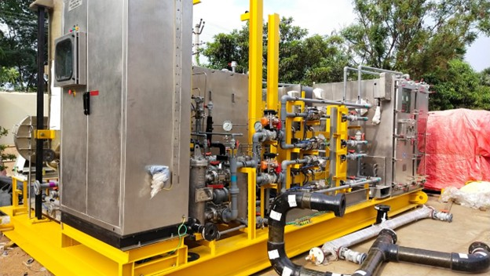
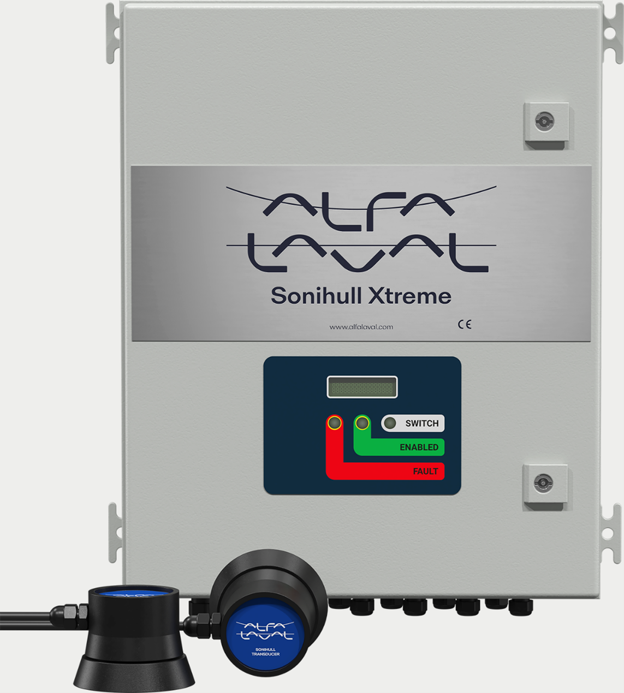
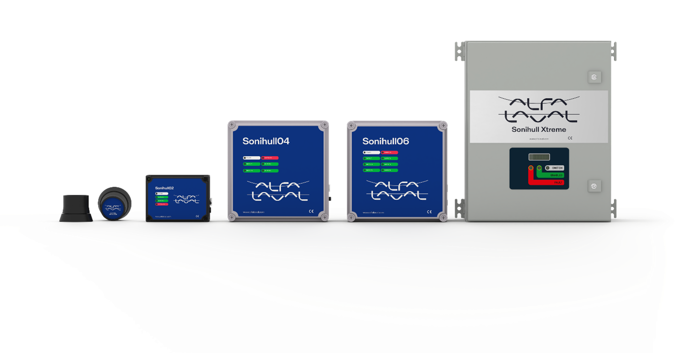
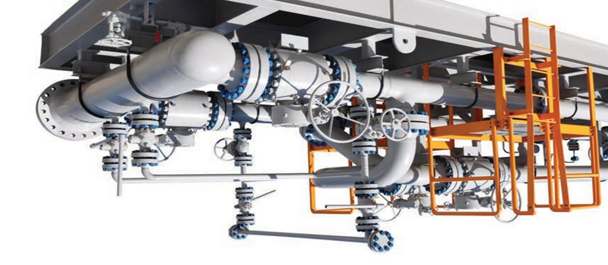

We supply, fabricate, install and provide after sales service of following represented products.

Sewage Treatment Systems
- Exclusive representation of De Nora in India since 1995 for advanced marine sewage treatment systems.
- Licensed manufacturing and in-house integration backed by strong design, engineering, and production capabilities.
- Systems based on proven electrolytic technology ensuring compliance with IMO discharge standards.
- Dedicated manufacturing facility in Visakhapatnam enabling complete localization from production to commissioning.
- Market leader in India with over 80% share in key marine sewage treatment system segments.
Hi-Point Services (I) Pvt. Ltd. represents De Nora since 1995 in India for advanced marine sewage treatment systems. Under a licensed manufacturing arrangement, Hi-Point manufactures and integrates these systems in India, supported by its in-house design, engineering, and manufacturing capabilities.
The systems are based on De Nora’s proven electrolytic treatment technology, which combines maceration, electrochemical oxidation, and electroflotation processes to effectively treat marine sewage and produce treated effluent that complies with the International Maritime Organization discharge standards, including IMO MEPC.227(64) marine sewage discharge standard. The technology ensures reliable treatment performance while maintaining a compact footprint, simplified operation, and minimal maintenance requirements.
With its dedicated manufacturing facility at Visakhapatnam and a strong in-house engineering and design team, Hi-Point has successfully localized the production, integration, testing, and commissioning of these systems for marine and offshore applications. This capability has enabled the company to deliver efficient project execution and responsive service support across shipyards, naval establishments, and offshore platforms.
Through continuous product support, technical expertise, and a strong service network, Hi-Point has established a leading position in the Indian marine sector and has successfully captured over 80% of the market share for marine sewage treatment systems in key segments.


Electro Chlorination Systems
- Exclusive representation of De Nora in India since 1995 for advanced electrochlorination systems.
- On-site generation of sodium hypochlorite using seawater or brine for safe and efficient disinfection.
- Widely used for marine growth prevention, cooling water treatment, and intake water disinfection.
- Fully engineered and integrated solutions supported by in-house design and manufacturing at Visakhapatnam.
- End-to-end lifecycle support ensuring reliable performance, reduced maintenance, and operational safety.
Hi-Point Services (I) Pvt. Ltd. represents De Nora since 1995 in India for advanced electrochlorination systems used in marine and industrial applications. These systems generate sodium hypochlorite on-site through an electrochemical process using seawater or brine, providing an efficient and reliable method for water disinfection and biofouling control.
Electrochlorination technology is widely used for marine growth prevention, cooling water treatment, and disinfection of intake water systems in ships, offshore platforms, power plants, and industrial facilities. By producing disinfectant directly at the point of use, the system eliminates the need for storage and handling of hazardous chemicals while ensuring consistent and controlled dosing.
Supported by Hi-Point’s in-house engineering and design team, along with its manufacturing and integration facility at Visakhapatnam, these systems are engineered, integrated, installed, and commissioned to meet the operational requirements of marine and industrial clients. Hi-Point also provides complete lifecycle support including installation, commissioning, and after-sales service.
Through its collaboration with De Nora and its strong technical capabilities, Hi-Point delivers reliable electrochlorination solutions that ensure effective water treatment, reduced maintenance, and long-term operational safety for critical infrastructure systems.



Vacuum Toilet Systems
- Representation of Jets Group in India since 2002 for advanced vacuum toilet and sanitary systems.
- Vacuum-based technology enabling efficient wastewater transport with significantly reduced water consumption.
- Ideal for marine and offshore applications ensuring hygiene, odor control, and blockage-free operation.
- Complete lifecycle support including engineering, supply, installation, commissioning, and service.
- Proven expertise and strong service network delivering reliable and efficient marine sanitation solutions.
Hi-Point Services (I) Pvt. Ltd. represents Jets Group since 2002 in India for advanced vacuum toilet and sanitary systems designed for marine and offshore applications. These systems use vacuum technology to transport wastewater efficiently through small-diameter piping, significantly reducing water consumption compared to conventional gravity-based systems.
Vacuum sanitary systems are widely used in naval vessels, commercial ships, offshore platforms, and other marine installations where reliability, hygiene, and efficient wastewater management are critical. The technology ensures controlled waste transport, minimizes odor, and reduces the risk of pipe blockages while optimizing space and operational efficiency onboard.
Hi-Point supports the complete lifecycle of these systems, including engineering integration, supply, installation, commissioning, and after-sales service. Backed by a trained technical team and strong service network across India, the company provides reliable support to shipyards, naval establishments, and marine operators.
Through its collaboration with Jets and its experience in marine sanitation systems, Hi-Point delivers efficient, reliable, and hygienic vacuum toilet solutions for modern marine environments.


Anti-Fouling & Agitation Systems
- Representation of Sonihull and Agitator Solutions Ltd since 2023 for advanced marine and industrial technologies.
- Ultrasonic anti-fouling systems preventing marine growth without chemicals, improving efficiency and reducing fuel consumption.
- Reliable protection for hulls, offshore structures, and seawater intake systems with environmentally responsible technology.
- Industrial agitation and mixing systems ensuring uniform blending and process stability across key industries.
- End-to-end support including engineering, supply, installation, commissioning, and after-sales service across India.
Hi-Point Services (I) Pvt. Ltd. represents Sonihull for advanced ultrasonic anti-fouling solutions for marine applications and Agitator Solutions Ltd for industrial agitation and mixing systems since 2023. These technologies are designed to improve operational efficiency, reduce maintenance, and protect critical infrastructure in marine and industrial environments.
The ultrasonic anti-fouling systems use controlled ultrasonic frequencies to prevent the accumulation of marine organisms such as algae, barnacles, and biofilm on submerged surfaces. This technology helps maintain hull performance, reduce fuel consumption, and eliminate the need for chemical-based anti-fouling treatments, making it a reliable and environmentally responsible solution for ships, offshore structures, and seawater intake systems.
For industrial applications, agitation and mixing systems are used to ensure uniform blending, suspension, and circulation of fluids in storage tanks, process vessels, and treatment systems. These solutions are widely used in sectors such as petrochemicals, power generation, water treatment, and other process industries where controlled mixing and process stability are essential.
Hi-Point supports these systems through its engineering expertise, project integration capability, and nationwide service network, providing supply, installation, commissioning, and after-sales support for marine and industrial customers across India.





High-Performance Epoxy Coating Systems
- Representation of MAX Epoxy in India since 2024 for high-performance coating solutions.
- Advanced epoxy coatings offering superior protection against corrosion, abrasion, and chemical exposure.
- Widely applied in marine vessels, offshore structures, pipelines, storage tanks, and industrial equipment.
- Enhances asset life, reduces maintenance requirements, and ensures structural integrity in harsh environments.
- Comprehensive support including technical guidance, supply, and application expertise across multiple sectors.
Hi-Point Services (I) Pvt. Ltd. represents MAX Epoxy since 2024 in India for advanced high-performance epoxy coating solutions designed for demanding marine and industrial environments. These coating systems are engineered to provide long-term protection against corrosion, abrasion, and chemical exposure, ensuring durability and reliability of critical infrastructure and equipment.
MAX Epoxy coatings are widely used for the protection of marine vessels, offshore structures, pipelines, storage tanks, and industrial process equipment, where resistance to harsh environmental and operating conditions is essential. The coatings help extend asset life, reduce maintenance requirements, and maintain structural integrity in aggressive service environments.
Through its engineering expertise and project execution capabilities, Hi-Point provides technical support, supply, and application guidance for MAX Epoxy coating systems across marine, petrochemical, power, and industrial sectors in India, ensuring effective surface protection and long-term performance of critical assets.
.jpg)


Fire and Gas Detection Systems
- Association with Honeywell Analytics (formerly Zellweger/Sieger) since 1991 for gas detection solutions.
- Strong pan-India presence across oil & gas, pharma, marine, power, fertilizer, automotive, and other sectors.
- Expertise in both fixed and portable gas detection systems for diverse industrial applications.
- Evolved from product supply to a full-fledged system integration and project execution partner.
- End-to-end support including LSTK projects, installation, commissioning, and long-term maintenance services (AMCs).
Hipoint Services has been associated with Honeywell Analytics (formerly Zellweger/Sieger) since 1991. The synergy, while predominantly having a pan India presence across Oil and Gas sector, has over time extended into Pharma, Marine, Power, Fertilizer, Automotive and other segments, both for Fixed as well as Portable gas detectors.
In line with ever evolving customer needs, Hipoint takes pride in transitioning the synergy from being suppliers to now being a full fledged system integration house, managing the entire fulcrum of customer support that involves execution of LSTK projects, supply, installation, commissioning, post sales support and engaging in annual maintenance contracts (AMCs) with our esteemed clientele, both offshore and onshore.


Signaling Devices
- Association with Eaton (erstwhile MEDC/FHF) since 1993 for hazardous area solutions.
- Initial focus on signal devices such as flameproof hooters, beacons, and manual call points integrated with gas detection systems.
- Expanded capabilities to execute LSTK projects including flameproof telephones and high-end CCTV systems.
- Solutions tailored for both standard packages and bespoke end-user requirements across industries.
- Pan-India supply and execution of flameproof and weatherproof systems for diverse industrial applications.
Hipoint Services has been associated with Eaton (erstwhile MEDC/FHF) since 1993. The partnership, initially built upon complementing the Honeywell gas detection vertical, by providing signal devices like flameproof hooters, beacons, manual call points etc. that would work in tandem with gas detection systems, diversified over time into supply and execution of LSTK projects involving several Eaton group companies dealing in Flameproof Telephones and High End CCTV Cameras for hazardous area applications.
Apart from consolidated gas detection packages, Eaton products are also designed for bespoke end user requirements and are supplied to customers on pan India basis across multiple segments, both in flameproof and weatherproof versions.
.png)
.png)
.png)
.png)
.png)


High End Met and Log Solutions
- Association with Rivencore Global (formerly Aeronautical & General Instruments Ltd.) since 1999.
- Specialized in high-end meteorological and log solutions for defence applications.
- Proven track record in supplying systems for warships and submarines.
- Advanced, military-grade technology delivering highly accurate and precise data.
- Supporting critical and stealth operations with reliable, high-performance solutions.
Hipoint Services has been associated with Rivencore Global (erstwhile Aeronautical & General Instruments Ltd.) since 1999 and take pride in providing high end Met and Log solutions to the defence sector that includes warships and submarines. With cutting edge technology that is miles ahead of competition, Rivencore and Hipoint have been supporting end users with solutions centered around sophisticated military grade equipment enabling optimum exploitation of products which relay highly accurate and precision data, typically required for extremely rugged and stealth operations.
.png)

Gas Metering Systems
- Association with Honeywell in 2026 for gas-based custody transfer skid solutions.
- Specialized in high-accuracy gas measurement systems for custody transfer applications.
- Engineered solutions ensuring compliance with international metering and transfer standards.
- Integrated skid packages including metering, control, and flow measurement systems.
- End-to-end capabilities covering engineering, integration, installation, and commissioning.
Hi-Point Services (I) Pvt. Ltd. has been associated with Honeywell in 2026 for advanced gas-based custody transfer skid solutions designed for accurate and reliable measurement of gas during commercial transactions. These systems play a critical role in ensuring transparency and accountability in the transfer of gas between stakeholders by providing precise flow measurement and data integrity.
The custody transfer skids are engineered with high-performance flow meters, control systems, and instrumentation that comply with international standards and industry requirements. Designed for use in oil & gas, petrochemical, and energy sectors, these systems ensure consistent performance under varying operating conditions while maintaining measurement accuracy.
Leveraging its engineering expertise and system integration capabilities, Hi-Point supports the complete lifecycle of these solutions, including design, integration, installation, commissioning, and after-sales support. Through its collaboration with Honeywell, Hi-Point delivers reliable and efficient custody transfer solutions that enhance operational confidence and ensure fair and accurate gas measurement.

Contact Us →
Thermal Solutions
- Association with Honeywell in 2026 for advanced thermal systems including burners, gas trains, and oil trains.
- Solutions designed for safe, efficient, and reliable combustion control in industrial applications.
- Comprehensive systems covering fuel handling, pressure regulation, control, and safety components.
- Suitable for diverse sectors including power, oil & gas, petrochemical, and process industries.
- End-to-end capabilities including engineering, integration, installation, commissioning, and support.
Hi-Point Services (I) Pvt. Ltd. has been associated with Honeywell in 2026 for advanced thermal systems, including industrial burners, gas trains, and oil trains, designed to deliver safe and efficient combustion solutions across a wide range of industrial applications. These systems play a critical role in ensuring controlled fuel supply, optimal combustion performance, and adherence to stringent safety standards.
Honeywell’s thermal solutions incorporate high-quality components for fuel regulation, pressure control, ignition, and flame monitoring, enabling precise control of combustion processes. Gas and oil train systems are engineered to manage fuel flow reliably while ensuring safety through integrated shut-off and monitoring mechanisms, making them suitable for critical operations in power plants, refineries, petrochemical units, and other process industries.
Leveraging its strong engineering and system integration capabilities, Hi-Point provides complete support across the project lifecycle, including system design, integration, supply, installation, commissioning, and after-sales service. Through this collaboration, Hi-Point delivers robust and efficient thermal system solutions that enhance operational safety, optimize fuel usage, and ensure long-term reliability of industrial processes.
Contact Us → Website →